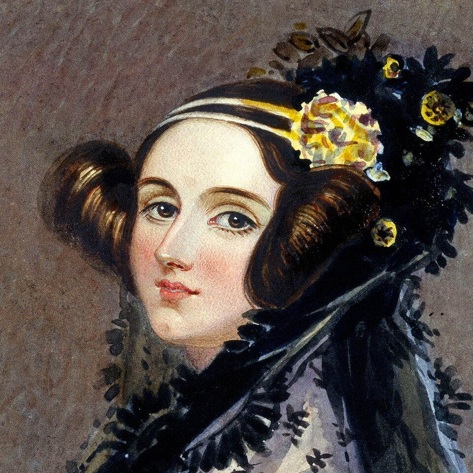
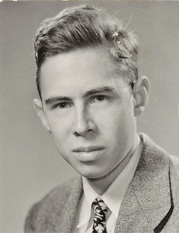
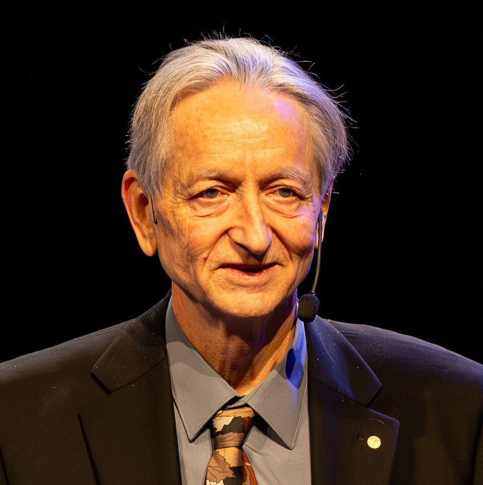
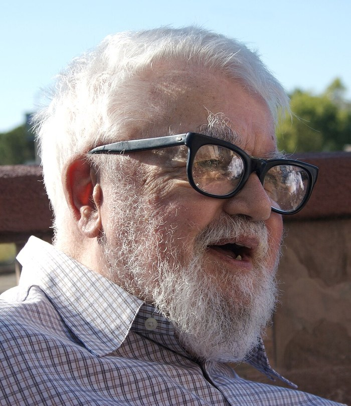
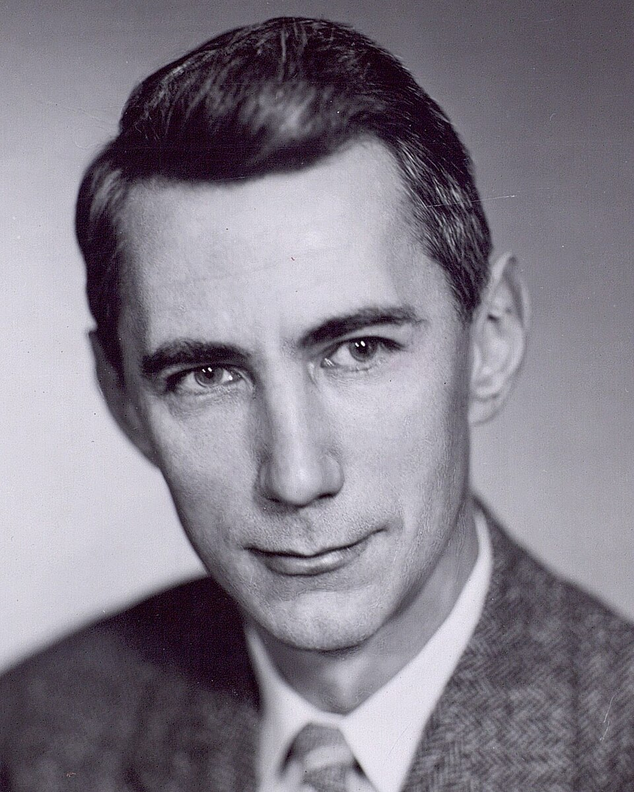
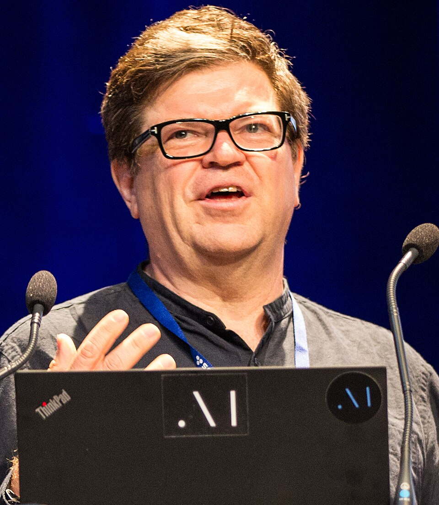
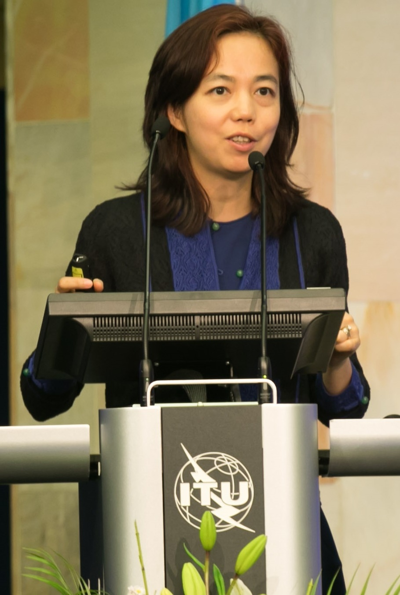
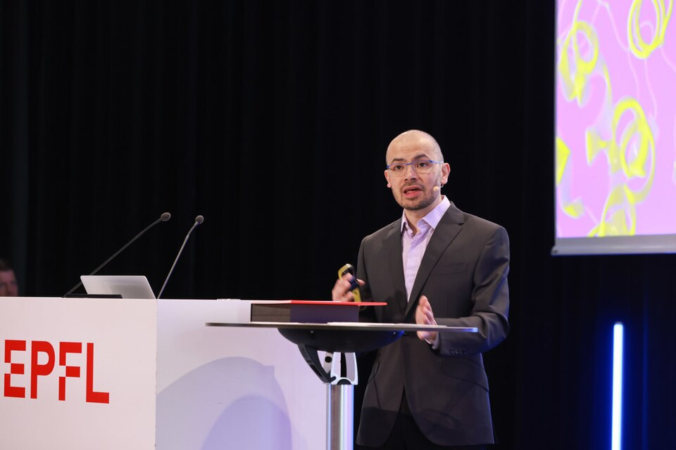
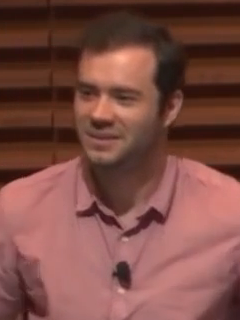

A long lineage.
AI for science asked how prediction becomes discovery. Ada Lovelace and Charles Babbage imagined a programmable machine before electronics existed; her notes include the first published algorithm (Menabrea & Lovelace, 1843). Alan Turing asked what computation is (Turing, 1936). Claude Shannon separated information from meaning (Shannon, 1948). McCulloch and Pitts turned neurons into logic (McCulloch & Pitts, 1943).
Frank Rosenblatt built the perceptron (Rosenblatt, 1958) and promised a machine that could learn. The promise outran the hardware, and the field entered a winter. The ideas survived in the margins.
A collective achievement.
The transformer did not appear from nowhere. It condensed decades of work on attention, optimization, hardware, and data; the 2017 paper is the visible edge (Vaswani et al., 2017). The names on the paper are only the visible edge of a much larger collaboration: data workers who label and filter corpora, hardware engineers who build the accelerators, operations teams who keep the clusters running, and annotators and red-teamers who shape the behaviour.
Credit in AI is contested, collaborative, and often late. Reading the primary sources is one way to see how the ideas actually developed, and how many people were needed to make them work.



.jpg){kind=link}



.jpg){kind=link}



.jpg){kind=link}

.jpg){kind=link}






.jpg){kind=link}

.png){kind=link}
The recurring cast · demo
Select a person or a moment. The history is a relay, not a parade of lone geniuses.
Most of the names are in the footnotes.
The visible names are a small sample. The modern stack is a relay of mathematicians, engineers, annotators, and organizers. Here are some of the people whose work the rest of the course builds on, and the piece each is most associated with.
The short version.
The history is collective, contested, and often late in giving credit.
A model is a social artefact as much as a technical one.
For the compact view of how the same cast fits together, open the whole arc: six movements, one machine, and the people behind each layer.